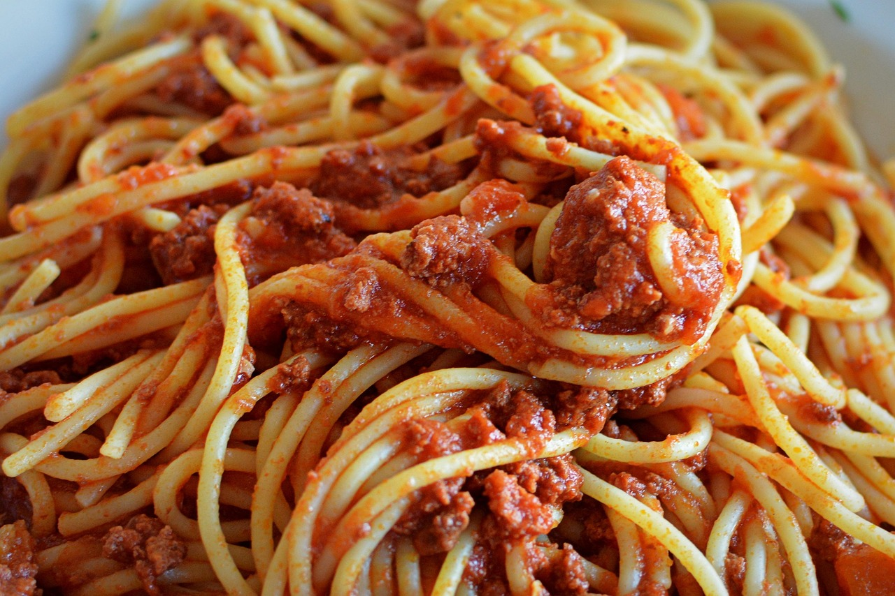

Spaghetti
Home

image by Ben-kerckx, pixabay
Description
MMMMMMMMM spaghetti one of my personal favourit dishes, there's nothing that can beat a nice spaghetti dinner afer a long day
Ingredients
- 1 carrot
- 1 yellow onion
- 500g ground beef(or preferre alternative)
- 1 tbsp olive oil
- 2 tsp dried oregano
- 1 pack crushed tomatoes (each 390 g)
- 2 dl water
- 2 tbsp tomato puree
- 1/2 tbsp japanese soy
- 1 meat stock cube (or equivalent amount of stock)
- Desired amount of salt and pepper
- 4 port spaghetti
What to Do
- Get a large saucepan filled with water for the spaghetti
- Peel and grate the carrot roughly on a grater. Peel and chop the onion.
- Brown the minced meat in the olive oil in a large saucepan or frying pan with high edges. Mix in the carrot and onion and let fry for about 3 minutes.
- Mix in oregano, crushed tomatoes, water, tomato puree, soy and crumbled bouillon cube.
- Lower the heat and let the sauce simmer for about 10 minutes under the lid. Season with salt and pepper.
- cook the spaghetti according to the instruction that tou see on the package
- Serve it all toghether with any vegetables you might like and something to drink